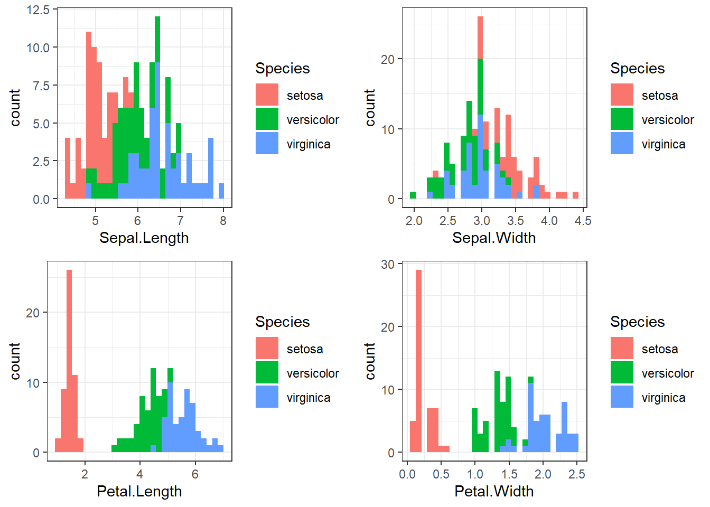
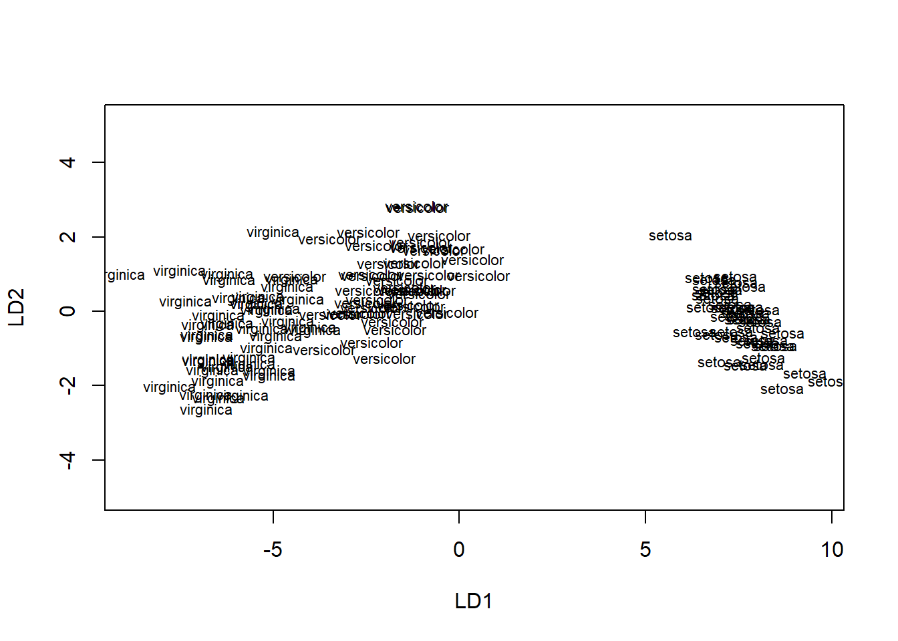
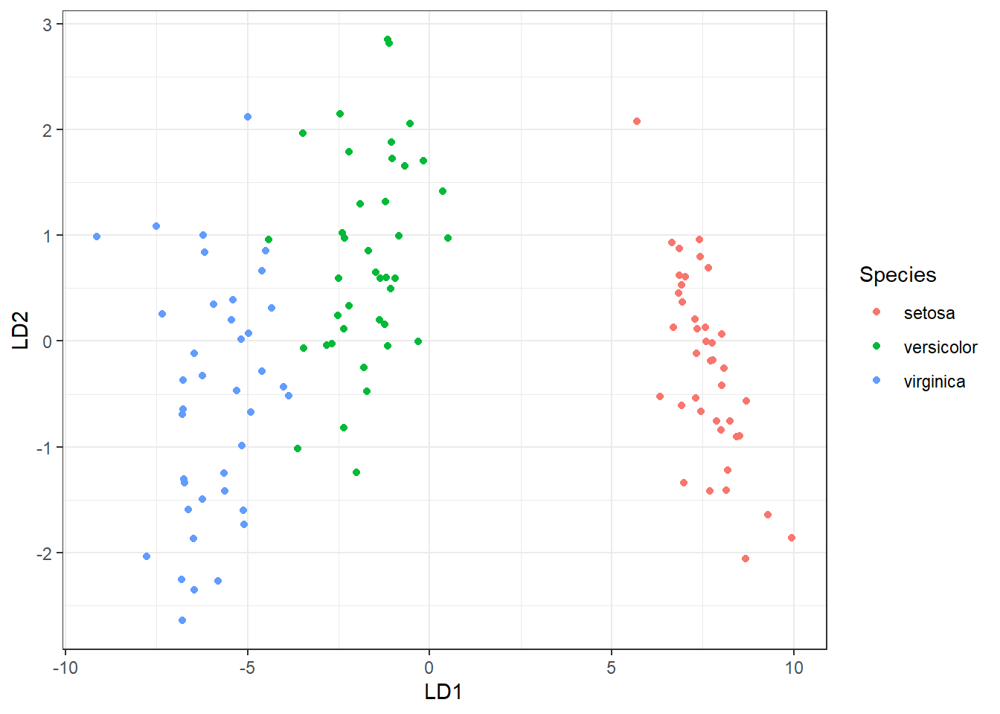
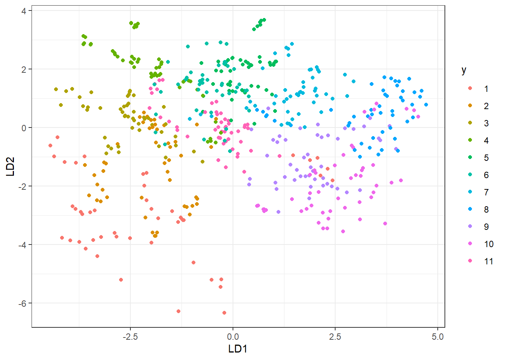

dat <- data.frame(A1=c(2.95, 2.53, 3.57, 3.16, 2.58, 2.16, 3.27),
A2=c(6.63, 7.79, 5.65, 5.47, 4.46, 6.22, 3.52),
y=c('passed','passed','passed','passed', 'not passed', 'not passed', 'not passed'))
dat$y <- as.factor(dat$y)
dat$y <- factor(dat$y, levels = c('passed', 'not passed'))
dat## A1 A2 y
## 1 2.95 6.63 passed
## 2 2.53 7.79 passed
## 3 3.57 5.65 passed
## 4 3.16 5.47 passed
## 5 2.58 4.46 not passed
## 6 2.16 6.22 not passed
## 7 3.27 3.52 not passedx1 <- as.matrix(filter(dat,y == 'passed')[,-3])
x2 <- as.matrix(filter(dat, y == 'not passed')[,-3])
mu1 <- as.vector(apply(x1, 2, mean))
mu2 <- as.vector(apply(x2, 2, mean))
mu <- as.vector(apply(dat[,-3], 2, mean))
x10 <- cbind((x1[,1]-mu[1]), (x1[,2]-mu[2]))
x20 <- cbind((x2[,1]-mu[1]), (x2[,2]-mu[2]))
c1 <- t(x10)%*%x10/nrow(x1)
c2 <- t(x20)%*%x20/nrow(x2)c <- ((nrow(x1)*c1)+(nrow(x2)*c2))/nrow(dat)
cinverse <- solve(c)p <- c(nrow(x1)/nrow(dat), nrow(x2)/nrow(dat))mu1 <- as.matrix(mu1)
dim(mu1)## [1] 2 1v <- as.matrix(x1[1,])
dim(v)## [1] 2 1dim(cinverse)## [1] 2 2p <- as.matrix(p)
t(mu1)%*%cinverse%*%v-(0.5*t(mu1)%*%cinverse%*%mu1)-p[1,1]## [,1]
## [1,] 54.97088t(mu2)%*%cinverse%*%v-(0.5*t(mu2)%*%cinverse%*%mu2)-p[2,1]## [,1]
## [1,] 53.2501fit <- lda(y~A1+A2, data = dat)
fit$means## A1 A2
## passed 3.0525 6.385000
## not passed 2.6700 4.733333head(iris)## Sepal.Length Sepal.Width Petal.Length Petal.Width Species
## 1 5.1 3.5 1.4 0.2 setosa
## 2 4.9 3.0 1.4 0.2 setosa
## 3 4.7 3.2 1.3 0.2 setosa
## 4 4.6 3.1 1.5 0.2 setosa
## 5 5.0 3.6 1.4 0.2 setosa
## 6 5.4 3.9 1.7 0.4 setosadim(iris)## [1] 150 5glimpse(iris)## Rows: 150
## Columns: 5
## $ Sepal.Length <dbl> 5.1, 4.9, 4.7, 4.6, 5.0, 5.4, 4.6, 5.0, 4.4, 4.9, 5.4,...
## $ Sepal.Width <dbl> 3.5, 3.0, 3.2, 3.1, 3.6, 3.9, 3.4, 3.4, 2.9, 3.1, 3.7,...
## $ Petal.Length <dbl> 1.4, 1.4, 1.3, 1.5, 1.4, 1.7, 1.4, 1.5, 1.4, 1.5, 1.5,...
## $ Petal.Width <dbl> 0.2, 0.2, 0.2, 0.2, 0.2, 0.4, 0.3, 0.2, 0.2, 0.1, 0.2,...
## $ Species <fct> setosa, setosa, setosa, setosa, setosa, setosa, setosa...iris$Species <- as.factor(iris$Species)
theme_set(theme_bw())
p1 <- iris %>%
ggplot(aes(x=Sepal.Length, fill = Species))+geom_histogram()
p2 <- iris %>%
ggplot(aes(x=Sepal.Width, fill = Species))+geom_histogram()
p3 <- iris %>%
ggplot(aes(x=Petal.Length, fill = Species))+geom_histogram()
p4 <- iris %>%
ggplot(aes(x=Petal.Width, fill = Species))+geom_histogram()
grid.arrange(p1, p2, p3, p4, ncol = 2, nrow = 2)## `stat_bin()` using `bins = 30`. Pick better value with `binwidth`.
## `stat_bin()` using `bins = 30`. Pick better value with `binwidth`.
## `stat_bin()` using `bins = 30`. Pick better value with `binwidth`.
## `stat_bin()` using `bins = 30`. Pick better value with `binwidth`.
caret::createDataPartition( y, # 분류(또는 레이블) times=1, # 생성할 분할의 수 p=0.5, # 훈련 데이터에서 사용할 데이터의 비율 list=TRUE, # 결과를 리스트로 반환할지 여부. FALSE면 행렬을 반환한다. )
set.seed(123)
train.sample <- iris$Species %>%
createDataPartition(p=0.8, list = F)
train.data <- iris[train.sample, ]
test.data <- iris[-train.sample, ]Discriminant analysis can be affected by the scale/unit in which predictor variables are measured. It’s generally recommended to standardize/normalize continuous predictor before the analysis.
caret::preProcess(
data : data.frame 형태로 지정해주어야함
method = ‘scale’ : 중심화 (평균값을 뺀다)
method = ‘center’ : 척도화 (표준편차로 나눈다)
method = c(‘center’, ‘scale’) : 정규화
method = c(‘range’) : 데이터를 [0, 1] 사이의 값으로 조정
method = c(‘BoxCox’), fundge = 0.2 : 데이터의 분포가 치우쳐져 있을 때 각 predictor 별로 lambda값을 지정한다.
fundge : lambda (0-0.2, 0+0.2)는 0으로 지정
method = ‘pca’ , pcaComp = 3 : pca 적용, 주성분의 수 (pca만 적용해도 center, scale이 한번에 적용됨)
method = ‘’nzv’ : 변수의 분산이 거의 0인 경우 제거
method = ‘zv’ : 변수의 모든 값이 같은 경우 제거
method = ‘knnlmpute’ : knn 기법을 이용해 NA 근처의 값들을 가중평균해서 값을 채움. RANN 패키지 필요
method = ‘bagImpute’ : bagged tree model을 통해 결측치를 채움
method = ‘medianImpute’ : median을 이용해서 결측치를 채움
predict를 적용해야 데이터 변환 가능 dat <- predict(preeprocess를 적용한 데이터, 원 데이터) 변환된 데이터 생성
preproc.param <- train.data %>%
preProcess(method = c('center', 'scale'))
train.transformed <- preproc.param %>% predict(train.data)
test.transformed <- preproc.param %>% predict(test.data)model <- lda(Species~., data = train.transformed)
plot(model)
lda.data <- cbind(train.transformed, predict(model)$x)
ggplot(lda.data, aes(LD1, LD2)) +
geom_point(aes(color = Species)) # prediction
predictions <- model %>% predict(test.transformed)mean(predictions$class == test.transformed$Species)## [1] 0.9666667model <- qda(Species~., data = train.transformed)
model## Call:
## qda(Species ~ ., data = train.transformed)
##
## Prior probabilities of groups:
## setosa versicolor virginica
## 0.3333333 0.3333333 0.3333333
##
## Group means:
## Sepal.Length Sepal.Width Petal.Length Petal.Width
## setosa -1.0112835 0.78048647 -1.2900001 -1.2453195
## versicolor 0.1014181 -0.68674658 0.2566029 0.1472614
## virginica 0.9098654 -0.09373989 1.0333972 1.0980581predictions <- model %>% predict(test.transformed)
mean(predictions$class == test.transformed$Species)## [1] 0.9666667model <- mda(Species~., data = train.transformed)
predictions <- model %>% predict(test.transformed)
mean(predictions == test.transformed$Species)## [1] 0.9666667model <- fda(Species~., data = train.transformed)
predictions <- model %>% predict(test.transformed)
mean(predictions == test.transformed$Species)## [1] 0.9666667model <- rda(Species~., data = train.transformed)
predictions <- model %>% predict(test.transformed)
mean(predictions$class == test.transformed$Species)## [1] 0.9333333url1 <- 'https://web.stanford.edu/~hastie/ElemStatLearn/datasets/vowel.train'
url2 <- 'https://web.stanford.edu/~hastie/ElemStatLearn/datasets/vowel.test'
download.file(url1, destfile = 'C:/Users/uos/Desktop/train.txt')
download.file(url2, destfile = 'C:/Users/uos/Desktop/test.txt')
setwd('C:/Users/uos/Desktop')
train <- fread('train.txt')
test <- fread('test.txt')
glimpse(train)## Rows: 528
## Columns: 12
## $ row.names <int> 1, 2, 3, 4, 5, 6, 7, 8, 9, 10, 11, 12, 13, 14, 15, 16, 17...
## $ y <int> 1, 2, 3, 4, 5, 6, 7, 8, 9, 10, 11, 1, 2, 3, 4, 5, 6, 7, 8...
## $ x.1 <dbl> -3.639, -3.327, -2.120, -2.287, -2.598, -2.852, -3.482, -...
## $ x.2 <dbl> 0.418, 0.496, 0.894, 1.809, 1.938, 1.914, 2.524, 2.305, 2...
## $ x.3 <dbl> -0.670, -0.694, -1.576, -1.498, -0.846, -0.755, -0.433, 0...
## $ x.4 <dbl> 1.779, 1.365, 0.147, 1.012, 1.062, 0.825, 1.048, 1.771, 0...
## $ x.5 <dbl> -0.168, -0.265, -0.707, -1.053, -1.633, -1.588, -1.995, -...
## $ x.6 <dbl> 1.627, 1.933, 1.559, 1.060, 0.764, 0.855, 0.902, 0.593, 1...
## $ x.7 <dbl> -0.388, -0.363, -0.579, -0.567, 0.394, 0.217, 0.322, -0.4...
## $ x.8 <dbl> 0.529, 0.510, 0.676, 0.235, -0.150, -0.246, 0.450, 0.992,...
## $ x.9 <dbl> -0.874, -0.621, -0.809, -0.091, 0.277, 0.238, 0.377, 0.57...
## $ x.10 <dbl> -0.814, -0.488, -0.049, -0.795, -0.396, -0.365, -0.366, -...head(train)## row.names y x.1 x.2 x.3 x.4 x.5 x.6 x.7 x.8 x.9
## 1: 1 1 -3.639 0.418 -0.670 1.779 -0.168 1.627 -0.388 0.529 -0.874
## 2: 2 2 -3.327 0.496 -0.694 1.365 -0.265 1.933 -0.363 0.510 -0.621
## 3: 3 3 -2.120 0.894 -1.576 0.147 -0.707 1.559 -0.579 0.676 -0.809
## 4: 4 4 -2.287 1.809 -1.498 1.012 -1.053 1.060 -0.567 0.235 -0.091
## 5: 5 5 -2.598 1.938 -0.846 1.062 -1.633 0.764 0.394 -0.150 0.277
## 6: 6 6 -2.852 1.914 -0.755 0.825 -1.588 0.855 0.217 -0.246 0.238
## x.10
## 1: -0.814
## 2: -0.488
## 3: -0.049
## 4: -0.795
## 5: -0.396
## 6: -0.365head(test)## row.names y x.1 x.2 x.3 x.4 x.5 x.6 x.7 x.8 x.9
## 1: 1 1 -1.149 -0.904 -1.988 0.739 -0.060 1.206 0.864 1.196 -0.300
## 2: 2 2 -2.613 -0.092 -0.540 0.484 0.389 1.741 0.198 0.257 -0.375
## 3: 3 3 -2.505 0.632 -0.593 0.304 0.496 0.824 -0.162 0.181 -0.363
## 4: 4 4 -1.768 1.769 -1.142 -0.739 -0.086 0.120 -0.230 0.217 -0.009
## 5: 5 5 -2.671 3.155 -0.514 0.133 -0.964 0.234 -0.071 1.192 0.254
## 6: 6 6 -2.509 1.326 0.354 0.663 -0.724 0.418 -0.496 0.713 0.638
## x.10
## 1: -0.467
## 2: -0.604
## 3: -0.764
## 4: -0.279
## 5: -0.471
## 6: -0.204train <- train[,-1]
test <- test[,-1]
train$y <- as.factor(train$y)
test$y <- as.factor(test$y)
preproc.param <- train %>%
preProcess(method = c('center', 'scale'))
train.transformed <- preproc.param %>% predict(train)
test.transformed <- preproc.param %>% predict(test)model <- lda(y~., data = train.transformed)
lda.data <- cbind(train.transformed, predict(model)$x)
ggplot(lda.data, aes(LD1, LD2)) +
geom_point(aes(color = y)) # prediction
predictions <- model %>% predict(test.transformed)mean(predictions$class == test.transformed$y)## [1] 0.44372291-mean(predictions$class == test.transformed$y)## [1] 0.5562771